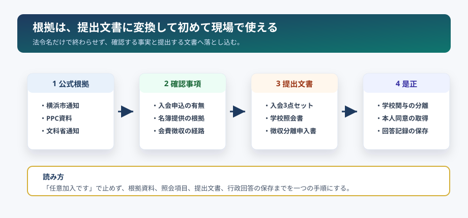

入会意思・個人情報
加入届・個人情報同意書の3点セット
民法522条の申込み・承諾、個人情報保護法の利用目的・第三者提供、横浜市通知のオプトイン整理を一緒に確認します。
当委員会が公開している一次資料、配布資料、データベースへの入口を、この1ページに整理しています。探している資料が決まっている場合は、ここから直接移動できます。
実際の学校配布文書、教育委員会の公式回答、行政通知の原本です。主張の根拠は、すべてここにある一次資料に遡れます。
検索で来た人がすぐ動けるように、根拠資料、確認事項、提出文書、関連ページを一列につなげました。任意加入の一般論ではなく、学校関与・名簿・会費・施設利用の実態を確認するための入口です。
民法522条の申込み・承諾、個人情報保護法の利用目的・第三者提供、横浜市通知のオプトイン整理を一緒に確認します。
入会申込記録、学校名簿・連絡ツール、PTA会費徴収、教職員の事務従事、学校施設利用を、抽象論ではなく文書名で確認します。
学校徴収金とPTA会費を同じ文書・同じ口座・同じ未納管理で扱う運用について、学校徴収金公会計化とPTA会計処理通知を踏まえて確認します。
学校教育法137条、社会教育法12条、地方公務員法35条を、印刷・保管・配布・会計・役員兼任などの実務に落として確認します。

そのまま印刷・提出・配布できる形に整えた資料です。
資料を探す前に全体像を知りたい場合は、立場別ガイドから入るのが近道です。
制度・法令・判例の整理と、当委員会の調査報告です。